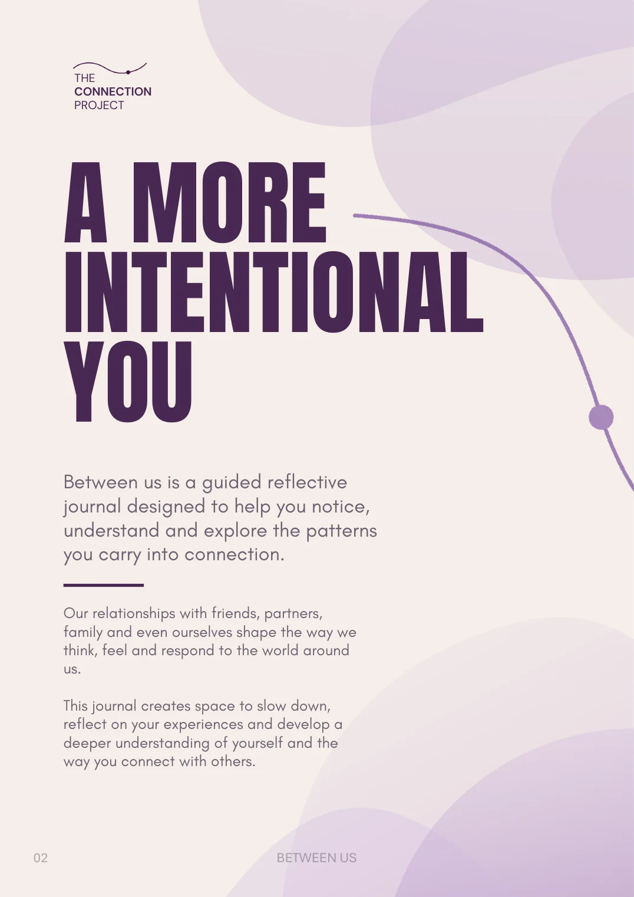
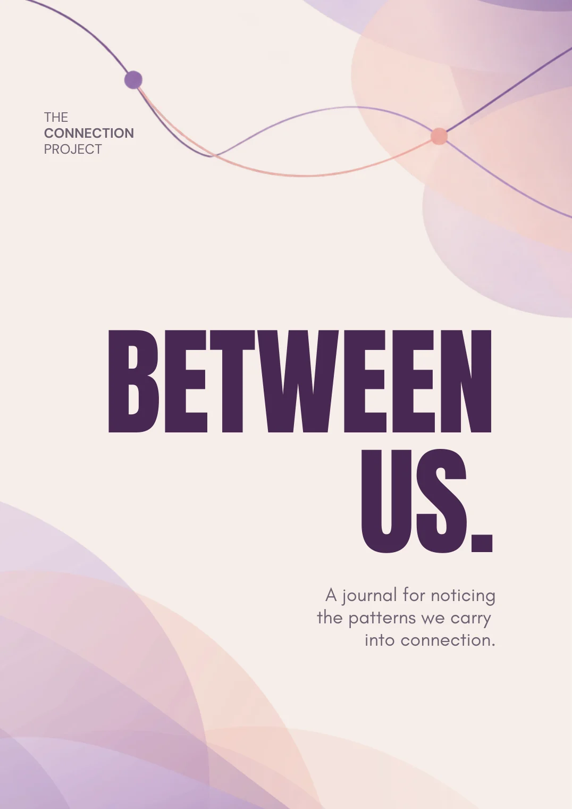

Explore. Reflect. Connect.
Connection is more than what we see.
We all carry patterns, experiences and emotions into our relationships. What happens when we begin to notice them?
Every connection has a story.
The way we connect with others is shaped by our experiences, emotions and the patterns we carry with us. Some are easy to recognise, while others sit beneath the surface.
The Connection Project creates space to explore these patterns, encouraging reflection, understanding and more intentional ways of connecting.
Why reflection matters.
Sometimes understanding begins with noticing.
The way we respond to others is often influenced by our experiences, emotions and familiar patterns. Taking time to reflect creates an opportunity to look beneath our immediate reactions and consider what might be shaping them.
Research into self-reflection, personal insight and emotion regulation offers useful perspectives on how we understand ourselves and relate to others.
But reflection isn’t about having all the answers. It’s about approaching our experiences with curiosity rather than judgement.
-
01
Becoming more aware
Self-awareness involves recognising our thoughts, emotions, behaviours and the ways we relate to others. Research highlights how reflection can contribute to developing a deeper understanding of ourselves, while recognising that reflection is most constructive when approached with curiosity rather than excessive self-criticism.
London, Sessa & Shelley (2023): Developing self-awareness (opens the article in a new tab) -
02
Understanding our emotions
The way we understand and manage emotions is connected to the quality of our relationships. Research has found associations between emotional competence and relationship quality, including romantic relationships, friendships and family connections.
Lovis-Schmidt et al. (2024): The role of emotional competence in romantic and non-romantic relationships (opens the article in a new tab) -
03
Making space to reflect
Reflection creates an opportunity to revisit experiences from a different perspective. Research suggests that taking a more distanced view of difficult experiences can offer modest benefits compared with remaining immersed in the experience, although outcomes vary.
Murdoch et al. (2023): The effectiveness of self-distanced versus self-immersed reflections (opens the article in a new tab)
Explore the research
- London, M., Sessa, V. I., & Shelley, L. A. (2023). Developing self-awareness: Learning processes for self- and interpersonal growth. Annual Review of Organizational Psychology and Organizational Behavior, 10, 261–288. Read the article: Developing self-awareness (opens in a new tab)
- Lovis-Schmidt, A., Tavener, D., Oestreich, J., & Rindermann, H. (2024). The role of emotional competence in romantic and non-romantic relationships: A meta-analysis. Personality and Individual Differences, 230, Article 112813. Read the article: The role of emotional competence (opens in a new tab)
- Murdoch, E. M., Chapman, M. T., Crane, M., & Gucciardi, D. F. (2023). The effectiveness of self-distanced versus self-immersed reflections among adults: Systematic review and meta-analysis of experimental studies. Stress and Health, 39(2), 255–271. Read the article: Self-distanced versus self-immersed reflections (opens in a new tab)
Supplementary: reflective writing
- Hoult, L. M., Wetherell, M. A., Edginton, T., & Smith, M. A. (2025). Positive expressive writing interventions, subjective health and wellbeing in non-clinical populations: A systematic review. PLOS ONE, 20(5), Article e0308928. Read the article: Positive expressive writing interventions (opens in a new tab)
These studies provide research-informed context for the project’s creative direction. They do not show that Between Us has been clinically tested or proven to improve relationships.
Notice the pattern. Understand the feeling. Explore what comes next.
Notice. Understand. Choose.
-
01
Notice
Recognise the patterns, feelings and behaviours that appear in our relationships.
-
02
Understand
Explore what might be influencing our reactions, emotions and needs.
-
03
Choose
Consider how greater self-awareness can support more intentional responses.



A more intentional you.
Between Us is a guided reflective journal designed to help you notice, understand and explore the patterns you carry into connection.
Through creative activities, visual mapping and personal reflection, the journal invites you to explore your relationships from a different perspective.
- Pages
- 20
- Activities
- 07
- Final reflection
- 01
Connection doesn’t end here.
Understanding ourselves is an ongoing process. Every moment of reflection can offer a new perspective on the way we connect.